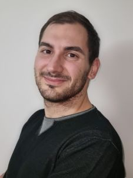
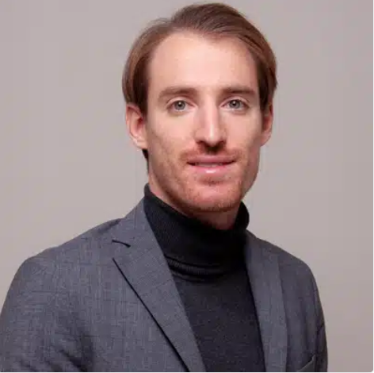
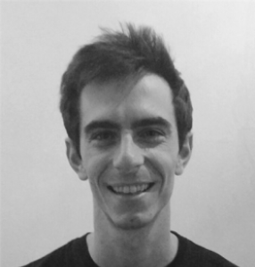
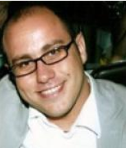

Organizing Committee

Alessandro Palma
Sapienza University of Rome
Alessio Arleo
Eindhoven University of Technology

Simone Guarino
University Campus Bio-Medico

Simone Lenti
Sapienza University of Rome

Emmanouil Spanakis
Computational Biomedicine Laboratory of FORTH-ICS & Technical University of Crete
For any information, please contact Alessandro Palma.
Technical Program Committee (TPC)
- Agiollo Andrea, TU Delft
- Angelini Marco, Link Campus University
- Arleo Alessio, Eindhoven University of Technology
- Bardhi Enkeleda, TU Delft
- Baumgartl Tom, University of Cologne
- Bernard Jürgen, University of Zurich
- Bonomi Silvia, Sapienza University of Rome
- Bouloukakis Georgios, University of Patras
- De Vita Fabrizio, University of Messina
- Filippini Roberto, PhD, senior expert and consultant in risk and safety engineering for Medtech industry
- Fontanella Francesco, DIEI, Università di Cassino e del Lazio meridionale-- ITALY
- Guarino Simone, Campus Bio-Medico University
- Hajj Hassan Houssam, Télécom SudParis
- Kohlhammer Jörn, Fraunhofer IGD
- Lenti Simone, Sapienza University of Rome
- Merone Mario, Campus Bio-Medico University
- Monti Flavia, Sapienza Università di Roma
- Pahr Daniel, University of Vienna
- Pallis George, University of Cyprus
- Palma Alessandro, Sapienza University of Rome
- Piccolotto Nikolaus, TU Wien
- Raidou Renata Georgia, TU Wien
- Rak Massimiliano, University Federico II of Naples
- Rind Alexander, St. Pölten University of Applied Sciences
- Santucci Francesca, Università Campus Bio-Medico di Roma
- Schreck Tobias, Graz University of Technology
- Sondag Max, University of Cologne
- Spanakis Emmanouil, Foundation for Research and Technology - Hellas, Institute of Computer Science (FORTH-ICS)
- Vitale Francesco, Università degli Studi di Napoli Federico II